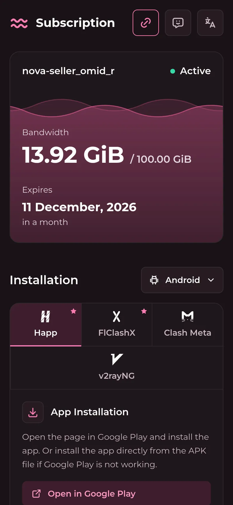
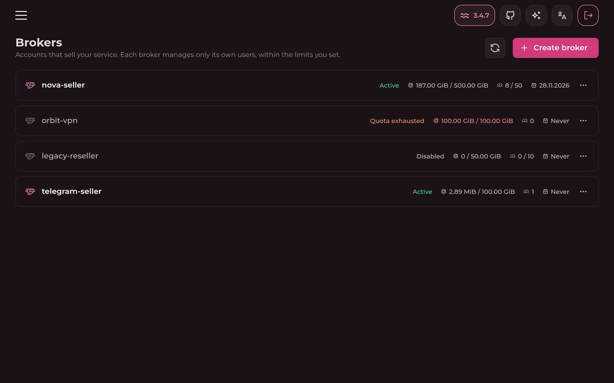
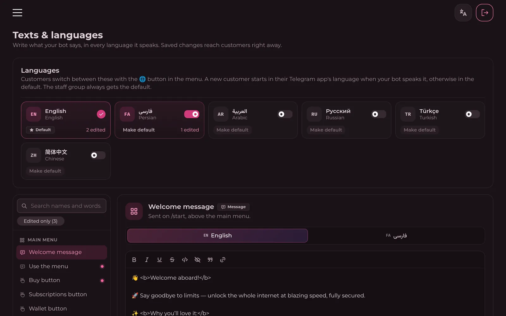

Run your Xray servers, users and resellers from one panel.
Umiji is a self-hosted panel for Xray-core. You manage nodes, users and subscriptions in one place. Your resellers get their own panel, a branded subscription page and a Telegram store bot that sells for them.


Eight stops from your server to your user's phone.
Everything in Umiji sits somewhere on this route. Learn it once and every page of the panel makes sense. Each stop links to its full explanation.
Config profile
The Xray setup your servers run.
Inbound
A port and protocol inside a profile, like VLESS with REALITY.
Node
A server that runs the profile with Xray-core.
Host
The address users connect to, listed in their app.
Internal squad
Which inbounds a group of users may use.
User
One subscription, with a traffic limit and an expiry date.
Subscription link
One personal link that carries every host the user may use.
Client app
Happ, v2rayNG, FlClashX and others import the link and connect.
Everything a selling operation needs, in one calm panel.
A visual config editor
Build Xray profiles with forms instead of JSON. Every field is there, the JSON view is one click away, and a real Xray core checks each change.
Nodes in one step
Give the panel a server's IP and root password. It installs Docker and the node over SSH and adds it for you. The password is used once and never stored.
Brokers
Reseller accounts that sign in to the same panel and see only their own users, inside the traffic quota, users limit and expiry date you set.
Telegram store bots
Each broker connects a bot that sells plans, takes card-to-card, crypto or other payments with receipt review, and hands out subscription links.
Branded subscription pages
Every broker gets a page in one of eight main colours, with install steps for each platform. Edits show up right away, with no restarts.
Telegram proxy (MTProto)
Add a Telegram proxy as an ordinary inbound. Users add it right inside Telegram, and brokers can show their own sponsored channel.
SSH terminal in the browser
Open a shell on any node from the panel, on a computer or a phone. Keys are made in your browser and never leave it.
English and Persian
The panel, the broker panel and the bots speak both, right to left included. The bots also speak Arabic, Russian, Turkish and Chinese.
Your resellers get a panel and a shop that feel like their own.
Brokers, with limits that hold
Create a broker, give them a traffic quota, a users limit and an expiry date. They sign in at the same address and manage only their own users.
- Users pause on their own when the quota runs out
- Their own subscription page and settings to brand
- They see countries and protocols, never your node details

A store in Telegram
Each broker connects a bot and a staff group. Customers top up a wallet, buy a plan in one tap and get their link in the chat.
- Plans and categories, priced in Toman
- Card-to-card, crypto and other methods, with receipt review
- Referral rewards and a once-per-account free trial
- Every message editable in six languages, with a live preview

Three ways in.
From an empty server to a working connection
Ten steps with screenshots: install, make a config, add a node, create a user and connect from a phone.
Open the guide 02 · ConceptsEvery idea in the panel, explained
Users, nodes, hosts, squads, templates, brokers, bots and tools: what each one is and how they connect.
Browse concepts 03 · API guideRun the panel from your own code
Tokens and scopes, webhooks you can trust, and every endpoint with its fields and a ready request.
Read the API guide